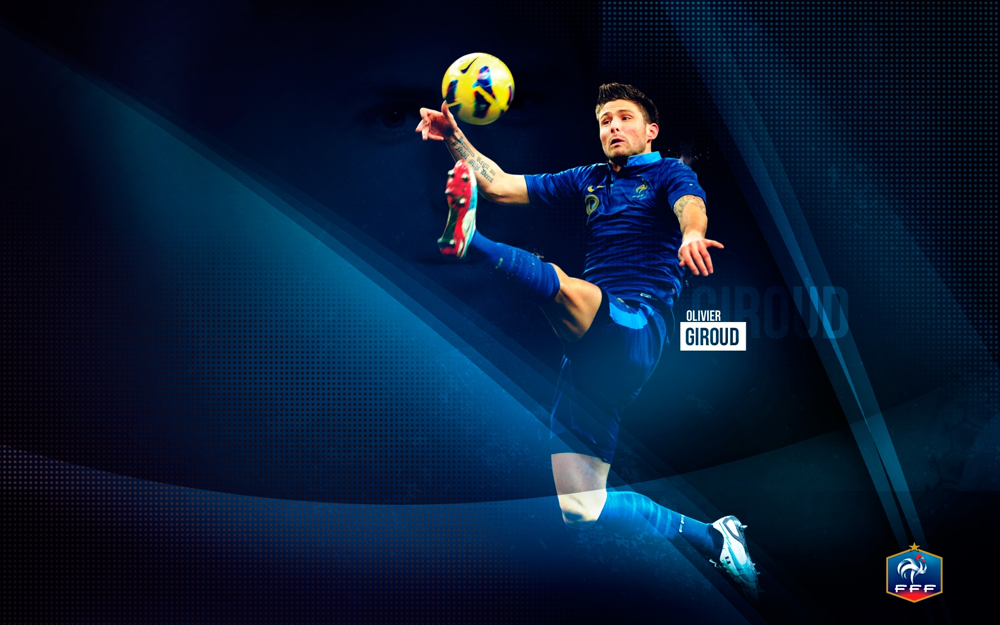
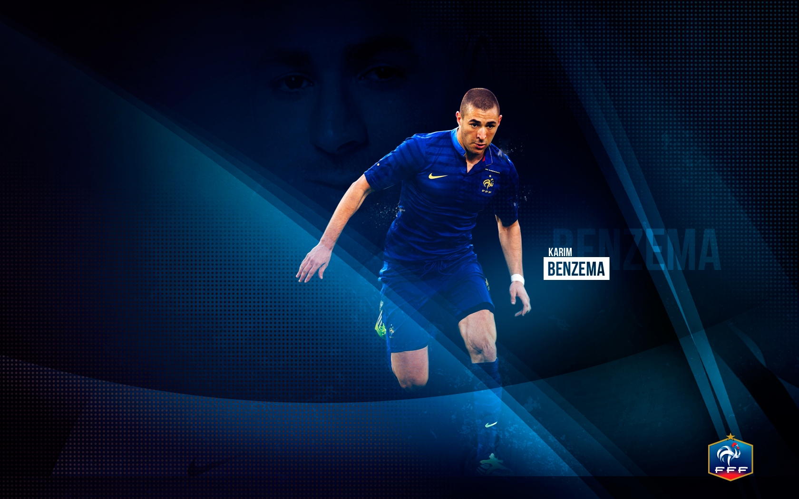
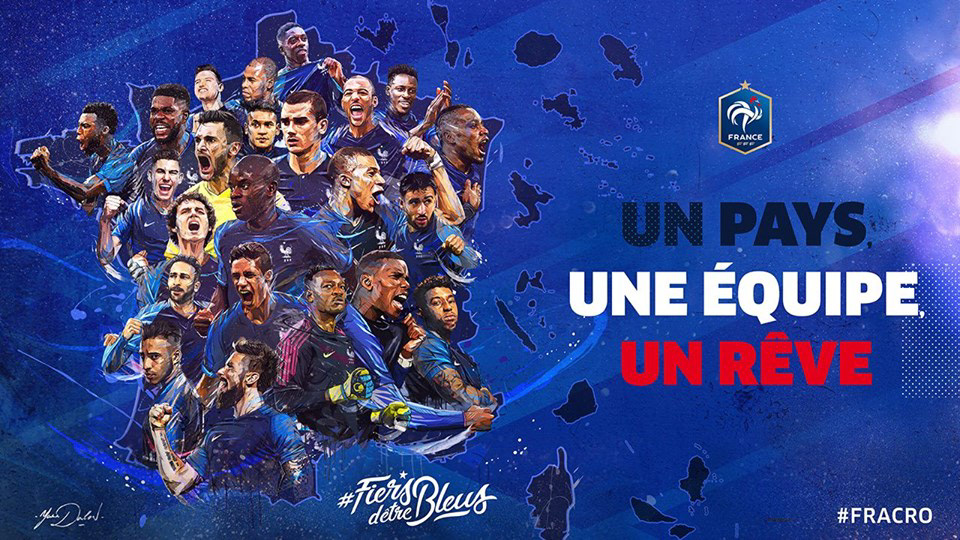

L'équipe de football




LE DÉTAIL DES TITRES ET FAITS MARQUANTS
- Championnat de la ville (2022)
- 2021 : vainqueur de la Ligue des Nations (Italie)
- 2018 : vainqueur de la Coupe du Monde (Russie)
- 2016 : finaliste du championnat d'Europe (France)
- 2006 : finaliste de la Coupe du monde (Allemagne)
- 2003 : vainqueur de la Coupe des Confédérations (France)
- 2001 : première place au classement mondial de la FIFA
- 2001 : vainqueur de la Coupe des Confédérations (Corée du Sud et Japon)
- 2000 : vainqueur du Championnat d'Europe (Pays-Bas et Belgique)
- 1998 : vainqueur de la Coupe du monde (France)
- 1986 : troisième de la Coupe du monde (Mexique)
- 1985 : vainqueur de la Coupe Intercontinentale (France)
- 1984 : vainqueur du Championnat d'Europe des Nations (France)
- 1982 : quatrième de la Coupe du monde (Espagne)
- 1958 : troisième de la Coupe du monde (Suède).
- Coupe de la région (2020)
DERNIERS MATCHS
| Date |
Résultat |
Adversaire |
| 4 decembre 2022 |
pologne |
Victoire 3-1 |
| 10 décembre 2022 |
Angleterre |
Victoire 2-1 |
| 14 décembre 2022 |
Maroc |
Victoire 2-0 |
| 18 décembre 2022 |
Argentine |
Defaite 3-3 |